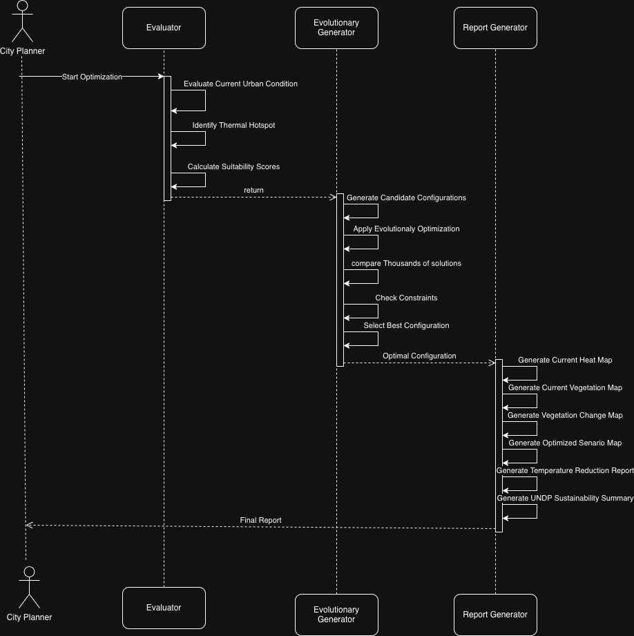

System Design Diagrams
This section presents the primary design diagrams developed for the Green Space Optimization System. These diagrams illustrate the system boundary, component interactions, and message flow across the two major processing phases of the project.
Diagram 1 – Context Diagram

The Context Diagram defines the overall system boundary and identifies the external entities that interact with the Green Space Optimization System. The City Planner provides the study area definition that specifies where the analysis should be performed, while the Satellite Image Source supplies historical multi-period satellite imagery used throughout the workflow.
At this level, the system is treated as a black box. Internal components and processing logic are intentionally hidden to emphasize inputs and outputs. The system produces several outputs for planners, including vegetation maps, heat maps, green space opportunity maps, temperature reduction estimates, and sustainability indicator summaries that support urban planning decisions.
Diagram 2 – Phase 1 Sequence Diagram (Data Preparation)

This sequence diagram illustrates the interactions between the City Planner, DataGenerator, DataDefinition, ModelFile, and Train components during the data preparation phase. The process begins when the planner initiates data collection for a selected study area and time period.
The DataGenerator retrieves satellite imagery and passes it to the DataDefinition component, which defines the required variables such as land surface temperature, vegetation coverage, population density, available land, budget constraints, and zoning restrictions. Configuration data and cooling coefficients for green space typologies are stored and loaded through the ModelFile component.
The Train component performs vegetation change detection using a 20×20 sliding window approach. It computes vegetation change values, identifies significant changes using threshold checks, and returns the generated change records. Upon completion, the system notifies the City Planner that Phase 1 processing has successfully finished.
Diagram 3 – Phase 2 Sequence Diagram (Optimization and Evaluation)
This sequence diagram represents the optimization and evaluation phase of the Green Space Optimization System. The Evaluator receives the outputs generated during Phase 1, including change records, vegetation grids, and land surface temperature data.
The Evaluator identifies thermal hotspots and calculates suitability scores for candidate locations. These results are passed to the EvolutionaryGenerator, which repeatedly generates candidate green space configurations, evaluates their fitness, and selects the optimal arrangement through an iterative optimization process.
The optimal solution is forwarded to the ReportGenerator, which creates multiple outputs including the current heat map, vegetation maps, vegetation change map, optimized after-scenario map, temperature reduction estimates, and sustainability indicator summaries. These outputs are then delivered to the City Planner to support evidence-based urban planning and decision-making.